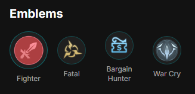
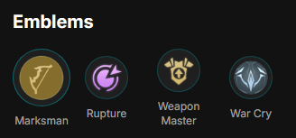

| Main Hero | Home |
BuildsIn Mobile Legends, a "build" refers to the specific combination of items, skills, and strategies that a player chooses for their hero during a match. A well-crafted build can enhance a hero's strengths, mitigate their weaknesses, and adapt to the flow of the game. Builds are often tailored to counter specific opponents or to fit a particular playstyle, such as aggressive, defensive, or supportive. Players may experiment with different builds to find the most effective way to utilize their hero's abilities and contribute to their team's success. Understanding and creating effective builds is crucial for competitive play in Mobile Legends. It involves analyzing the current meta, anticipating opponents' choices, and making strategic decisions that can influence the outcome of a match. By mastering builds, players can maximize their hero's potential and increase their chances of victory. |
|
 Core Build |
|
 Burst Build |
The Core Build focuses on maximizing Freya's attack speed and survivability, allowing her to sustain in fights and deal consistent damage. The Burst Build, on the other hand, emphasizes raw damage output, enabling Freya to quickly eliminate targets. Both builds are designed to enhance Freya's strengths and adapt to different playstyles and matchups. Players can choose between these builds based on their preferred playstyle and the specific needs of the match, ensuring that Freya remains a formidable presence on the battlefield.